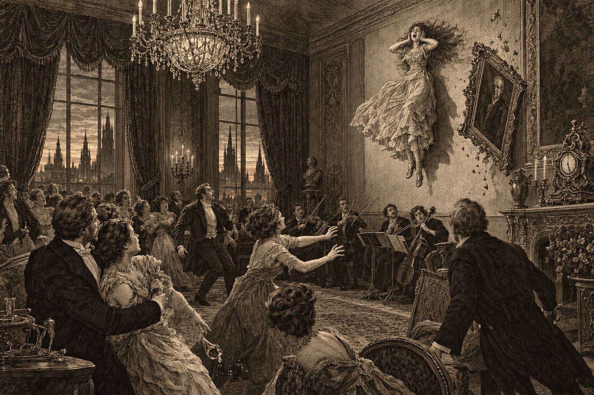
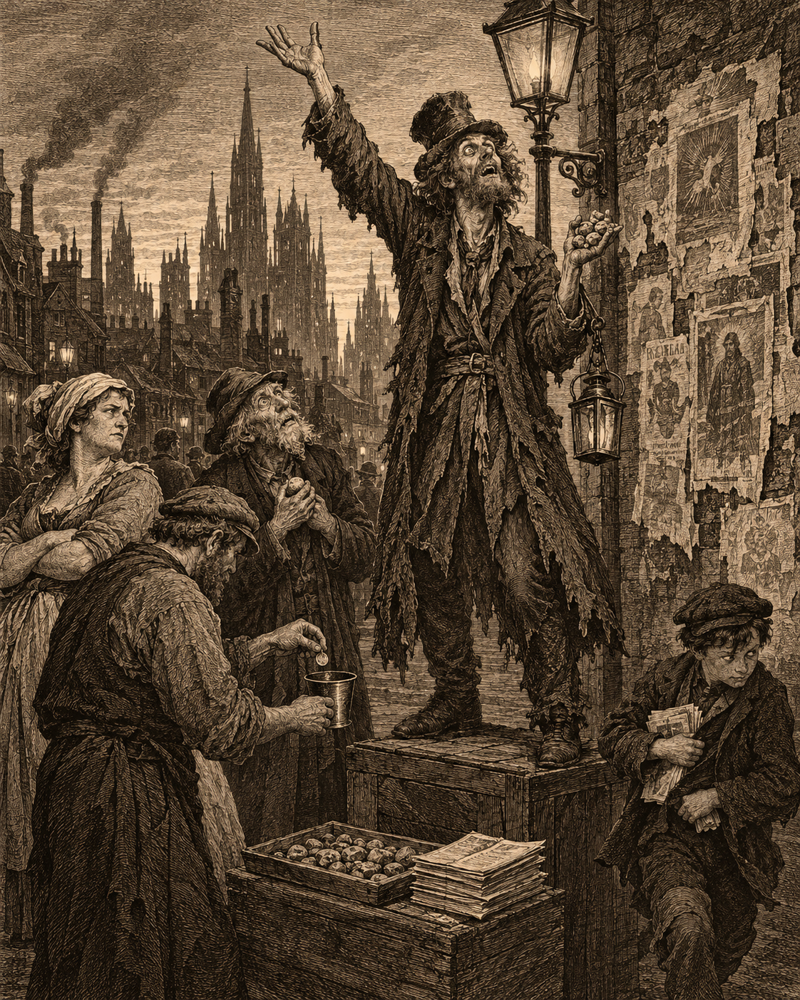

The Vellacott drawing room at 5:47, as recalled by those present.
I attend a great many parties, and I write about most of them. I expected to write about this one too: the Vellacotts’ autumn salon, the good crystal, the better gossip. I did not expect to write this.
The Vellacotts have a daughter, Miss Ottilie, fifteen years old and, as her mother is fond of telling guests, “sensitive.” She feels a storm before it breaks, and the household spirits are said to be quite fond of her. Lady Vellacott likes to bring her down to the drawing room and show her off. A little before six, she did.
At 5:47 by the mantel clock, Miss Ottilie began to scream. It was not a child’s tantrum. It was a howl, high and terrible, with her hands clamped over her ears. “Make it stop! It’s going too fast! It’s screaming, can’t you hear it screaming? Make it stop!” The string quartet stopped instead. Nobody else in the room heard a thing.
Her father went to carry her out. He never reached her. Before forty guests, the girl rose clear of the carpet, hung for a moment in the air, and was flung back against the wall as if by a hand none of us could see. The portrait above her came down with her.
The party was dismissed within the quarter hour. I am told Miss Ottilie is resting, bruised but otherwise unharmed, and the family asks for privacy, which I shall grant them from the end of this paragraph.
Had it been the only such report, I would have filed it as a sad society item. It was not. Over the days that followed, the Courier’s correspondents brought in story after story from all over the city, and the clocks all agreed.
In Coalridge, at the same minute, a laborer was found on his knees in the road, clawing at the paving stones until his fingers bled. “It won’t wait,” he kept saying. “I’ll miss it. I have to get on. I have to get on.” Get on what, he could not say. Neither could the Bluecoats who took him away.
In Charhollow, a crowd of children were out after hours playing the street game they call “Fifth Line!” At 5:47 they stopped. Not one at a time: all at once, mid-step and mid-shout. No laughing, no running. They stood in the road and stared, every one of them, at the same nothing in the distance. Their parents shook them and called their names and got nothing. Then, all together, the children blinked, said they were tired, and went inside.
The Courier also sought comment from the Dimmer Sisters. They sent a woman to meet me in a tavern. She was cold, in a way that had nothing to do with the weather, and when she spoke her voice seemed to come from much farther away than across the table. “Something is off,” she said. “And given that we do not know what, that is concerning.” She offered me witchbane and a ghost ward for my door. I politely declined. It was all rather unpleasant.
The Spirit Wardens declined to comment.
One thing more, and then I shall stop. While writing this I went to visit my mother, who is old and unwell, and who has for years rocked gently from side to side in her chair, as if keeping time to something. When I came in she was perfectly still. I asked her if anything was wrong. “I no longer hear it,” she said. Hear what, Mother? “The click,” she said. “The clack. Click, clack. Click, clack.” She said a few more things after that, none of which made any sense, and then she drifted off to sleep.

Prophecy, available by the bit.
Nobody in Doskvol saw 5:47 coming. By the next morning, everybody had. The Brethren of the Third Bell posted notices claiming they had predicted it to the minute, though no one can find the prediction, and their pamphlet from last month has the world ending on the fourth. The Church of the Patient Tide says it was in their sermons all along, “in a manner of speaking.” A Crow’s Foot man calling himself the Seventh Lamp has begun selling protective pebbles against the next one, at two bits apiece, three for five.
Not one of these prophecies, I note, was printed, posted or preached before the evening in question.
Then there is the Meridian Circle, a new society quite fashionable in Brightstone, whose membership is said to include some very old names. Its rooms are spotless, yet every member I passed on the stair had a fine grey dust on cuff and collar, like ash from a fire. The gloves of its spokeswoman, Miss Veleris Quill, were dusted the same. Did the Circle know what happened at 5:47? “We cannot clarify at this time,” Miss Quill said. “But we have something very big in the works.” At the door she pressed her card on me. It bears no name, only a small grey handprint.